A graph is more than decoration. A graph is an argument, a claim about what the numbers mean, made in a language (position, length, color) that the eye reads faster than any sentence. And like any argument, a graph can be honest or it can mislead, sometimes without its maker even noticing. This chapter is about making the honest kind, and recognizing the other kind. It is also about what a graph can reveal: Anscombe’s quartet showed four datasets with identical statistics but four completely different shapes, a reminder that a picture often catches what a summary number hides.
The examples here come from a real project - The Sports Page, a daily newsletter (a sister project to this book) that takes one strange sports number and tells the truth about what it does and does not mean. Its house rule is the same one that runs through this whole book: describe what happened, predict what will happen, and never dress up one as the other. Good graphics are how you keep that promise to your reader.
26.1 Learning Objectives
Match the geometry of a graph to the question (trend, comparison, distribution, relationship).
Recognize how an axis can exaggerate or hide a real change - and choose an honest one.
Prefer small multiples to overloaded dual-axis charts, and ranked bars to pie charts.
Show the distribution, not just a summary, and tame overplotting.
26.2 Match the Geometry to the Question
The first decision is not color or font - it is geometry. What shape of mark answers your question? A change over time wants a line. Here is a true story: over the last four decades, major-league baseball became a strikeout sport. Watch it in one line:
NoteWorking in SPSS, Julia, or Python?
Every figure here uses real data that ships with the book: data/mlb_league_by_year.csv, data/mlb_hitters_2026.csv, and data/nfl_draft_by_team.csv. Read them directly - no setup needed. See Getting the Book’s Data if you want the setup files for your language.
import pandas as pdimport matplotlib.pyplot as pltmlb = pd.read_csv("data/mlb_league_by_year.csv")plt.plot(mlb.year, mlb.K_9, color="steelblue", linewidth=2, marker="o", ms=4)plt.ylabel("Strikeouts per 9 innings")plt.title("The strikeout revolution")plt.show()
[<matplotlib.lines.Line2D object at 0x7f70758f6150>]
Text(0, 0.5, 'Strikeouts per 9 innings')
Text(0.5, 1.0, 'The strikeout revolution')
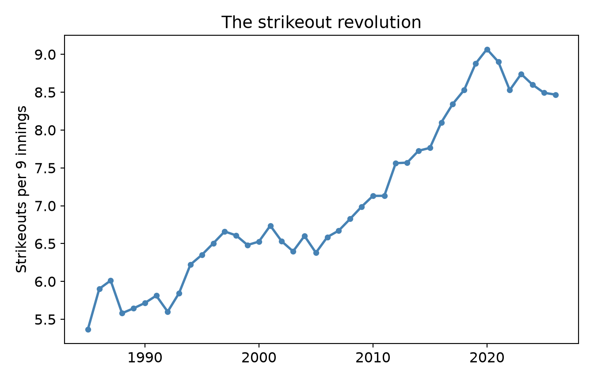
A line says “these points are connected in sequence” - exactly the claim you want for a time trend. A bar chart here would be wrong: bars say “these are separate categories to compare,” which is a different (and misleading) sentence. The geometry is the argument. Trend → line; category comparison → bar; one distribution → histogram; two variables → scatter. Pick the mark that makes the claim you actually mean.
26.3 Don’t Lie With the Axis
Same data, two axes, two very different impressions. Batting average has drifted down over the same period, from about .257 to about .242, a real but modest slide. First, watch a zoomed-in y-axis make that modest slide look like a catastrophe:
ggplot(mlb, aes(year, AVG)) +geom_line(color ="firebrick", linewidth =1) +coord_cartesian(ylim =c(0.242, 0.258)) +# axis zoomed to the datalabs(x =NULL, y ="AVG", title ="“Hitting is DEAD”") +theme_book()
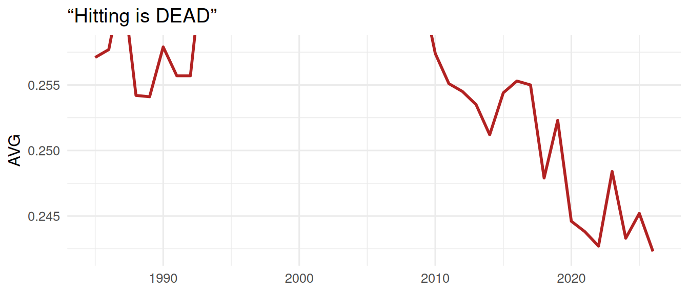
Figure 26.2: Dishonest axis: zoomed tight, a 15-point drift looks like a cliff.
GET DATA /TYPE=TXT /FILE='data/mlb_league_by_year.csv'
/DELIMITERS=',' /QUALIFIER='"' /FIRSTCASE=2
/VARIABLES=year F16.6 OPS F16.6 K_PA F16.6 BB_PA F16.6 HR_PA F16.6 AVG F16.6 ERA F16.6 K_9 F16.6 BB_9 F16.6 HR_9 F16.6.
* Dishonest axis: zoom the y scale tight and a 15-point drift looks
* like a cliff. In the chart editor you would set the y-axis minimum to
* .242 and maximum to .258; in syntax, GGRAPH carries the scale range.
GGRAPH
/GRAPHDATASET NAME="g" VARIABLES=year AVG
/GRAPHSPEC SOURCE=INLINE
/FRAME INNER=YES.
BEGIN GPL
SOURCE: s=userSource(id("g"))
DATA: year=col(source(s), name("year"))
DATA: AVG=col(source(s), name("AVG"))
SCALE: linear(dim(2), min(0.242), max(0.258))
GUIDE: text.title(label("Hitting is DEAD"))
ELEMENT: line(position(year*AVG))
END GPL.
/tmp/RtmpLilx2c/file340a579af7f9.sps:7.1-7.6: error: GGRAPH: GGRAPH is not yet
implemented.
7 | GGRAPH
| ^~~~~~
/tmp/RtmpLilx2c/file340a579af7f9.sps:11.1-11.9: error: Unknown command `BEGIN
GPL'.
11 | BEGIN GPL
| ^~~~~~~~~
usingCSV, DataFrames, Plotsmlb = CSV.read("data/mlb_league_by_year.csv", DataFrame)plot(mlb.year, mlb.AVG, linewidth =2, color =:firebrick, legend =false, ylims = (0.242, 0.258), # axis zoomed to the data ylabel ="AVG", title ="\"Hitting is DEAD\"")
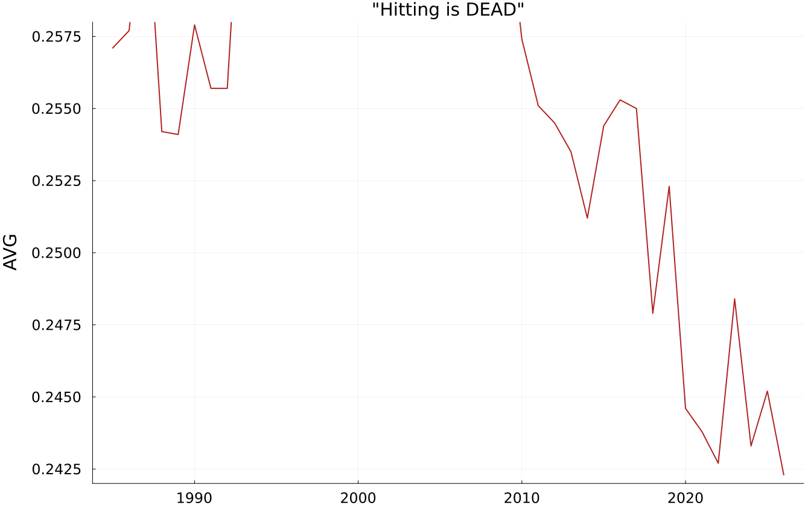
import pandas as pdimport matplotlib.pyplot as pltmlb = pd.read_csv("data/mlb_league_by_year.csv")plt.plot(mlb.year, mlb.AVG, color="firebrick", linewidth=2)plt.ylim(0.242, 0.258) # axis zoomed to the dataplt.ylabel("AVG"); plt.title('"Hitting is DEAD"')plt.show()
[<matplotlib.lines.Line2D object at 0x7fc1501a3380>]
(0.242, 0.258)
Text(0, 0.5, 'AVG')
Text(0.5, 1.0, '"Hitting is DEAD"')
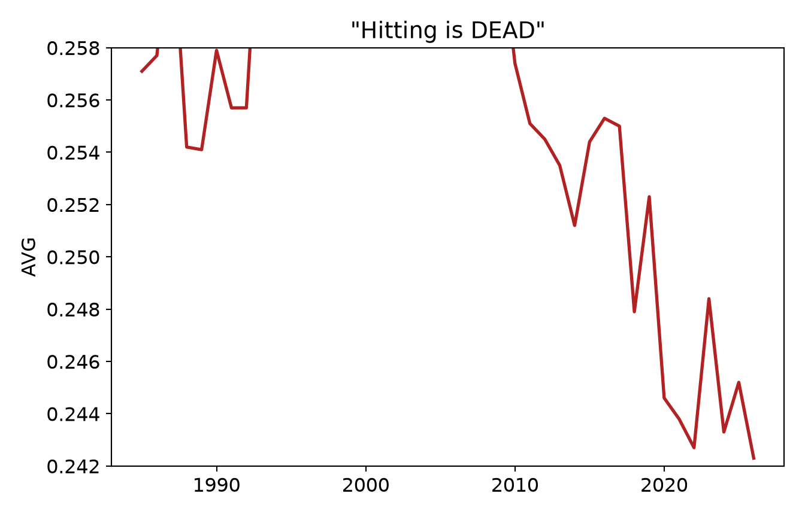
Now the exact same numbers, on an axis anchored to a meaningful baseline:
ggplot(mlb, aes(year, AVG)) +geom_line(color ="firebrick", linewidth =1) +coord_cartesian(ylim =c(0, 0.3)) +# axis from a meaningful zerolabs(x =NULL, y ="AVG", title ="“Hitting drifted down a bit”") +theme_book()
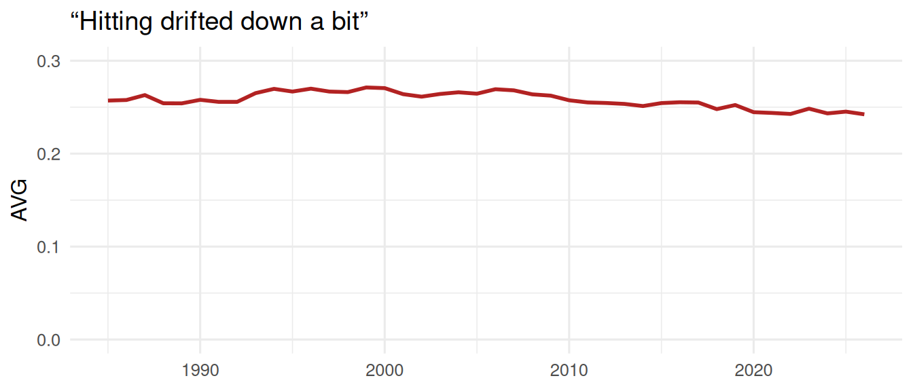
Figure 26.3: Honest axis: from a meaningful zero, the same drift is a gentle slope.
GET DATA /TYPE=TXT /FILE='data/mlb_league_by_year.csv'
/DELIMITERS=',' /QUALIFIER='"' /FIRSTCASE=2
/VARIABLES=year F16.6 OPS F16.6 K_PA F16.6 BB_PA F16.6 HR_PA F16.6 AVG F16.6 ERA F16.6 K_9 F16.6 BB_9 F16.6 HR_9 F16.6.
* Honest axis: from a meaningful zero, the same drift is a gentle slope.
GGRAPH
/GRAPHDATASET NAME="g" VARIABLES=year AVG
/GRAPHSPEC SOURCE=INLINE
/FRAME INNER=YES.
BEGIN GPL
SOURCE: s=userSource(id("g"))
DATA: year=col(source(s), name("year"))
DATA: AVG=col(source(s), name("AVG"))
SCALE: linear(dim(2), min(0), max(0.3))
GUIDE: text.title(label("Hitting drifted down a bit"))
ELEMENT: line(position(year*AVG))
END GPL.
/tmp/RtmpLilx2c/file340a25bdea81.sps:5.1-5.6: error: GGRAPH: GGRAPH is not yet
implemented.
5 | GGRAPH
| ^~~~~~
/tmp/RtmpLilx2c/file340a25bdea81.sps:9.1-9.9: error: Unknown command `BEGIN
GPL'.
9 | BEGIN GPL
| ^~~~~~~~~
usingCSV, DataFrames, Plotsmlb = CSV.read("data/mlb_league_by_year.csv", DataFrame)plot(mlb.year, mlb.AVG, linewidth =2, color =:firebrick, legend =false, ylims = (0, 0.3), # axis from a meaningful zero ylabel ="AVG", title ="\"Hitting drifted down a bit\"")
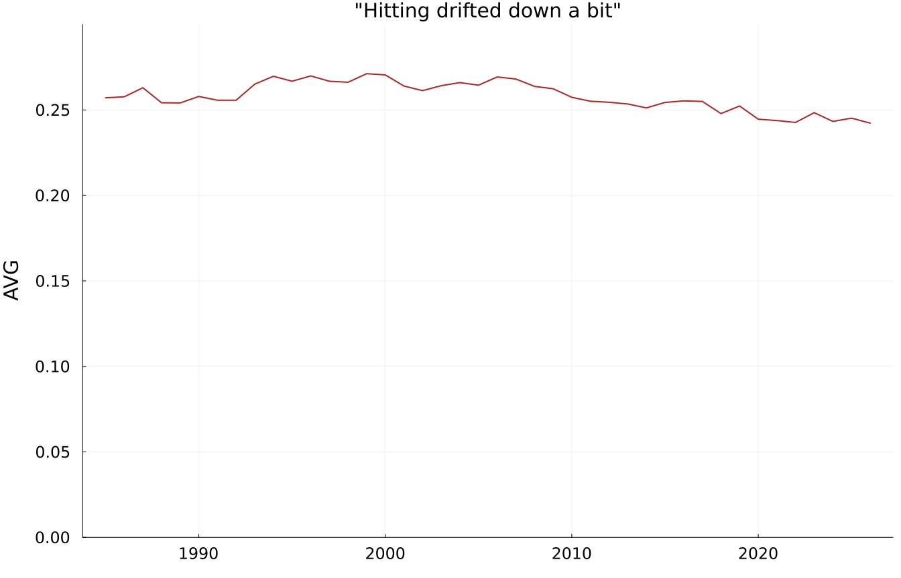
import pandas as pdimport matplotlib.pyplot as pltmlb = pd.read_csv("data/mlb_league_by_year.csv")plt.plot(mlb.year, mlb.AVG, color="firebrick", linewidth=2)plt.ylim(0, 0.3) # axis from a meaningful zeroplt.ylabel("AVG"); plt.title('"Hitting drifted down a bit"')plt.show()
[<matplotlib.lines.Line2D object at 0x7f13777321b0>]
(0.0, 0.3)
Text(0, 0.5, 'AVG')
Text(0.5, 1.0, '"Hitting drifted down a bit"')
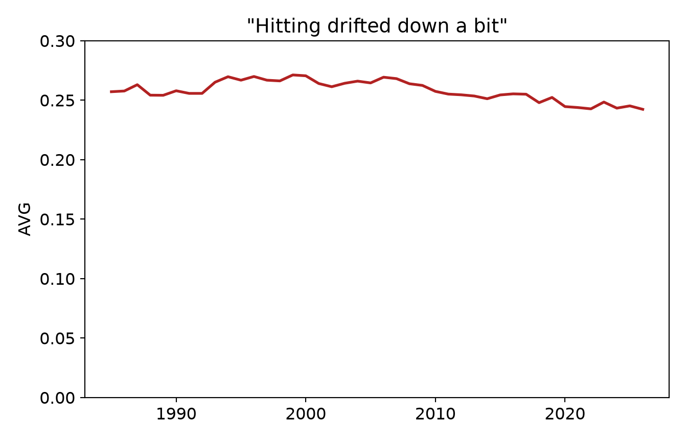
Same numbers, opposite impressions. The first axis turns a 15-point drift into what looks like a cliff; the second, anchored to a meaningful baseline, shows the truth: hitting softened, it did not collapse. Neither axis is always right. A zoomed axis is legitimate when small differences genuinely matter (and you say so), but the choice is never neutral. Ask what the axis is doing to the size of the effect, and whether that is honest.
WarningThe most common accidental lie
A truncated y-axis is the single most common way a well-meaning person makes a small effect look enormous (or the reverse). Before you publish a chart, look at your axis limits and ask: would this effect still look this big if I started from zero? If the honest version looks unremarkable, the honest answer might be that the effect is unremarkable.
26.4 Small Multiples Beat Overloaded Dual-Axis Charts
You have three trends to show at once: strikeouts, walks, and home runs per plate appearance. The temptation is to put them all on one chart with two or three y-axes. It is better not to. Dual-axis charts let you manufacture almost any relationship by rescaling one axis, and readers cannot tell which line belongs to which scale. The clearer tool is small multiples: the same chart repeated, one panel per series, on comparable axes.
long <- mlb |>select(year, Strikeouts = K_PA, Walks = BB_PA, `Home runs`= HR_PA) |>pivot_longer(-year, names_to ="kind", values_to ="rate")ggplot(long, aes(year, rate)) +geom_line(color ="steelblue", linewidth =0.9) +facet_wrap(~ kind, scales ="free_y") +# one panel per serieslabs(x =NULL, y ="per plate appearance") +theme_book()
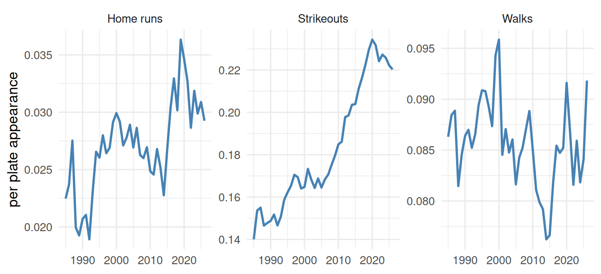
Figure 26.4: Three league trends as small multiples — comparable, honest, readable.
* Valid SPSS, shown rather than run: PSPP has implemented neither
* VARSTOCASES (which stacks the three rate columns into long form) nor
* GGRAPH's PANEL clause, which is how SPSS draws small multiples.
GET DATA /TYPE=TXT /FILE='data/mlb_league_by_year.csv'
/DELIMITERS=',' /QUALIFIER='"' /FIRSTCASE=2
/VARIABLES=year F16.6 K_PA F16.6 BB_PA F16.6 HR_PA F16.6.
VARSTOCASES /MAKE rate FROM K_PA BB_PA HR_PA /INDEX=kind.
GGRAPH /GRAPHDATASET NAME="g" VARIABLES=year rate kind
/GRAPHSPEC SOURCE=INLINE.
BEGIN GPL
SOURCE: s=userSource(id("g"))
DATA: year=col(source(s), name("year"))
DATA: rate=col(source(s), name("rate"))
DATA: kind=col(source(s), name("kind"), unit.category())
ELEMENT: line(position(year*rate*kind))
END GPL.
usingCSV, DataFrames, Plotsmlb = CSV.read("data/mlb_league_by_year.csv", DataFrame)# one panel per seriesplot([plot(mlb.year, mlb[!, c], title =String(c), legend =false) for c in [:K_PA, :BB_PA, :HR_PA]]..., layout = (1, 3))
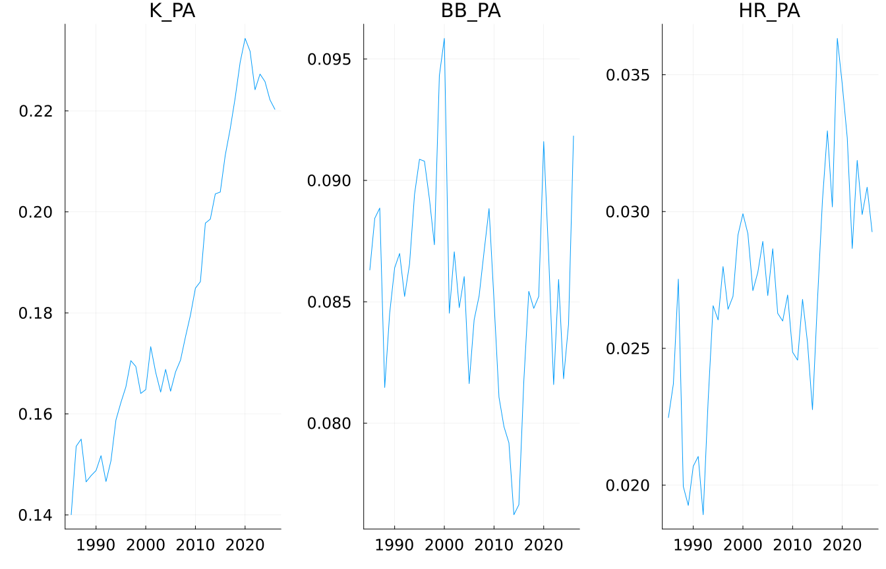
import pandas as pdimport matplotlib.pyplot as pltmlb = pd.read_csv("data/mlb_league_by_year.csv")long= mlb.melt(id_vars="year", value_vars=["K_PA", "BB_PA", "HR_PA"], var_name="kind", value_name="rate")fig, axes = plt.subplots(1, 3, figsize=(10, 3)) # one panel per seriesfor ax, (kind, g) inzip(axes, long.groupby("kind")): ax.plot(g.year, g.rate, color="steelblue") ax.set_title(kind)axes[0].set_ylabel("per plate appearance")fig.tight_layout(); plt.show()
[<matplotlib.lines.Line2D object at 0x7f9764f10110>]
Text(0.5, 1.0, 'BB_PA')
[<matplotlib.lines.Line2D object at 0x7f9764f73d70>]
Text(0.5, 1.0, 'HR_PA')
[<matplotlib.lines.Line2D object at 0x7f9764f73fb0>]
Text(0.5, 1.0, 'K_PA')
Text(0, 0.5, 'per plate appearance')
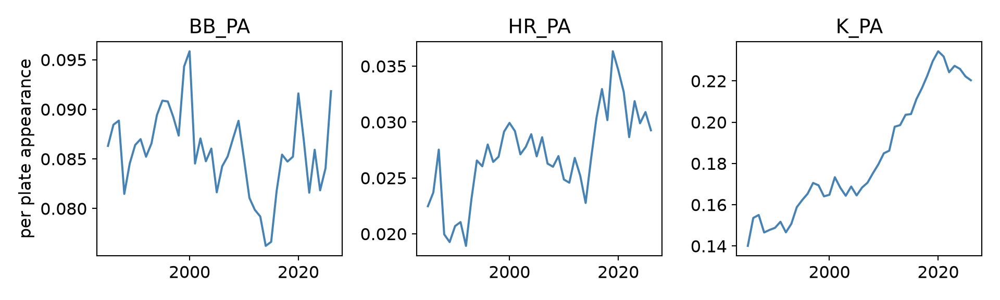
Each panel tells its own honest story (strikeouts soared, walks held steady, homers crept up), and no rescaling trick can fake a relationship between them. When you have many series, repeat the chart; don’t overload it.
26.5 Rank, Don’t Pie
For comparing a quantity across categories, the eye reads position along a common scale far more accurately than it reads the angles of a pie. So a bar chart beats a pie chart almost always - and a sorted bar chart beats an unsorted one, because the ordering is itself information. Which NFL teams draft worst? Thirty-two teams is already far too many for a pie; rank them:
nfl <-read_csv("data/nfl_draft_by_team.csv", show_col_types =FALSE)ggplot(nfl, aes(x =fct_reorder(team, rate_bust_a), y = rate_bust_a)) +geom_col(fill ="grey35") +coord_flip() +# horizontal: labels stay readablelabs(x =NULL, y ="Bust rate (no Pro Bowl)", title ="Draft busts by team") +theme_book()
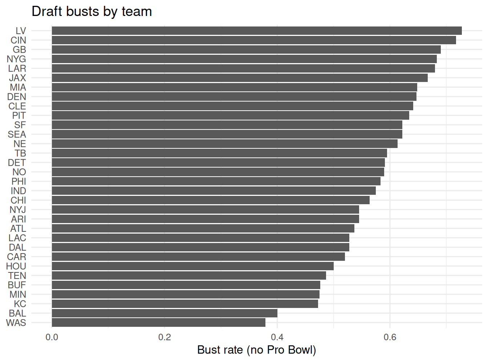
Figure 26.5: NFL first-round bust rate by team — ranked bars, not a 32-slice pie.
* Rank, don't pie: a sorted horizontal bar chart of bust rate by team.
GET DATA /TYPE=TXT /FILE='data/nfl_draft_by_team.csv'
/DELIMITERS=',' /QUALIFIER='"' /FIRSTCASE=2
/VARIABLES=team A24 n_picks F16.6 n_judged F16.6 n_hof F16.6 n_bust_a F16.6 n_bust_b F16.6 n_bust_c F16.6 n_triple_bust F16.6 n_clean_hit F16.6 rate_bust_a F16.6 rate_bust_b F16.6 rate_bust_c F16.6 rate_triple_bust F16.6 rate_clean_hit F16.6 hof_per_pick F16.6.
SORT CASES BY rate_bust_a (A).
* MEAN() rather than VALUE() here: each team has exactly one row, so the
* two are identical, and MEAN() is accepted by every SPSS-family engine.
GRAPH /BAR(SIMPLE) = MEAN(rate_bust_a) BY team.
* In the chart editor, transpose to horizontal so the team labels stay
* readable - the equivalent of coord_flip().
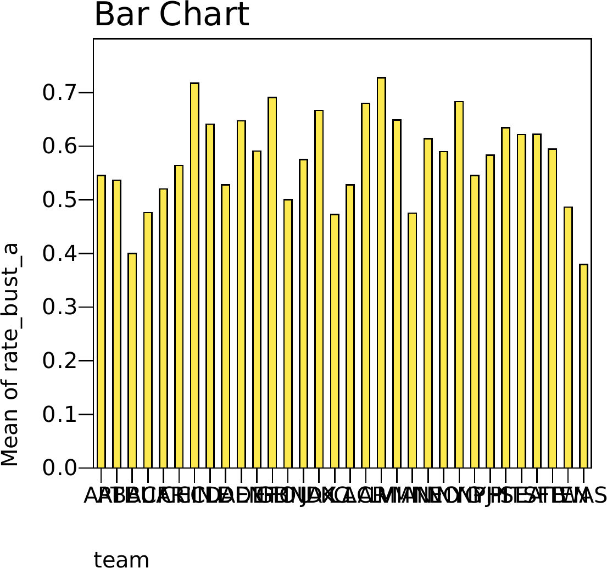
usingCSV, DataFrames, Plotsnfl = CSV.read("data/nfl_draft_by_team.csv", DataFrame)sort!(nfl, :rate_bust_a) # sorted: the ranking IS the messagebar(nfl.team, nfl.rate_bust_a, orientation =:horizontal, legend =false, xlabel ="Bust rate (no Pro Bowl)")
import pandas as pdimport matplotlib.pyplot as pltnfl = pd.read_csv("data/nfl_draft_by_team.csv")nfl = nfl.sort_values("rate_bust_a") # sorted: the ranking IS the messageplt.figure(figsize=(6, 8))plt.barh(nfl.team, nfl.rate_bust_a, color="0.35")plt.xlabel("Bust rate (no Pro Bowl)")plt.tight_layout(); plt.show()
<Figure size 1152x1536 with 0 Axes>
<BarContainer object of 32 artists>
Text(0.5, 0, 'Bust rate (no Pro Bowl)')
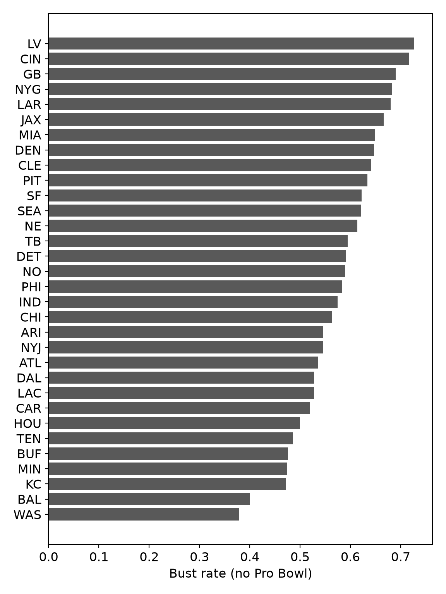
Sorted, horizontal, one bar per team: you can read off the best and worst drafters quickly, and every team is comparable on the same axis. A pie chart of these same 32 numbers would be very hard to read; you could not tell 22% from 25% by eye, and the ranking would disappear. Pie charts work for maybe two or three slices; past that, rank a bar chart.
26.6 Show the Distribution, Not Just the Mean
A single summary number - a mean, a bar - throws away the shape of the data, and the shape is usually the story. Do not draw a bar of averages when you could draw the whole distribution. Here are this season’s qualified hitters; a histogram shows the spread of performance a mean would erase:
h <-read_csv("data/mlb_hitters_2026.csv", show_col_types =FALSE) |>filter(PA >=50)ggplot(h, aes(OPS)) +geom_histogram(aes(y =after_stat(density)), bins =30,fill ="steelblue", color ="white") +# a normal with this data's own mean and SD - here the curve is a REFERENCE,# not a claim: the gap between bars and curve is the interesting partstat_function(fun = dnorm, args =list(mean =mean(h$OPS), sd =sd(h$OPS)),colour ="grey30", linewidth =0.9, linetype ="dashed") +geom_vline(xintercept =median(h$OPS), color ="firebrick", linewidth =1) +labs(x ="OPS", y ="density", title ="Most hitters are ordinary; a few are stars") +theme_book()
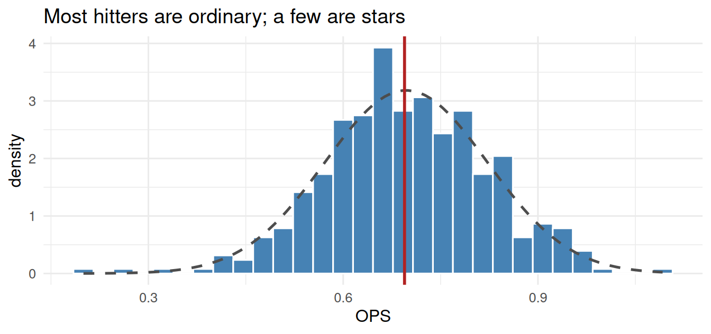
Figure 26.6: The distribution of OPS across qualified hitters — the shape a single mean hides.
* Show the distribution, not just the mean.
GET DATA /TYPE=TXT /FILE='data/mlb_hitters_2026.csv'
/DELIMITERS=',' /QUALIFIER='"' /FIRSTCASE=2
/VARIABLES=pid F16.6 name A24 team A24 PA F16.6 AB F16.6 H F16.6 HR F16.6 BB F16.6 SO F16.6 AVG F16.6 OBP F16.6 SLG F16.6 OPS F16.6.
SELECT IF (PA >= 50).
EXECUTE.
FREQUENCIES VARIABLES=OPS /STATISTICS=MEDIAN /HISTOGRAM.
usingCSV, DataFrames, Statistics, Plotsh =filter(:PA =>>=(50), CSV.read("data/mlb_hitters_2026.csv", DataFrame))histogram(h.OPS, bins =30, legend =false, xlabel ="OPS", ylabel ="hitters", title ="Most hitters are ordinary; a few are stars")vline!([median(h.OPS)], color =:firebrick, linewidth =2)
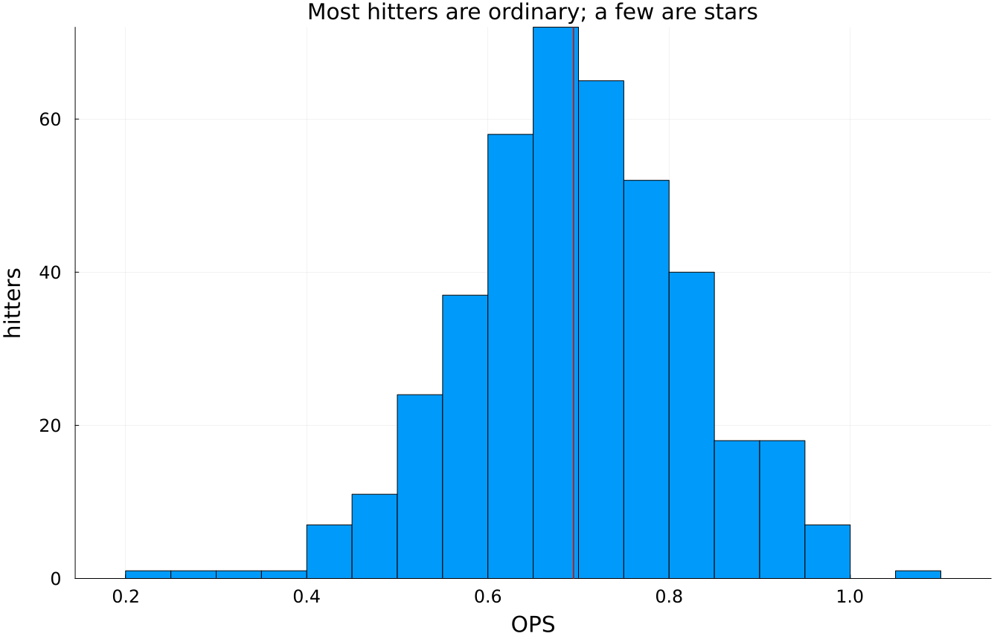
import pandas as pdimport matplotlib.pyplot as plth = pd.read_csv("data/mlb_hitters_2026.csv").query("PA >= 50")plt.hist(h.OPS, bins=30, color="steelblue", edgecolor="white")plt.axvline(h.OPS.median(), color="firebrick", linewidth=2)plt.xlabel("OPS"); plt.ylabel("hitters")plt.title("Most hitters are ordinary; a few are stars")plt.show()
And when you plot two variables against each other with hundreds of points, they pile up and hide their own density. The fix is transparency (or jitter): let the dark regions show where the data actually concentrate.
The cloud’s shape, with its positive drift, its dense middle, and a few outliers in the upper right, is information a table of two means could never carry. That is much of the reason graphics exist.
ImportantThe honest-graph checklist
Before a chart leaves your hands, run it past four questions:
Geometry - does the mark (line/bar/histogram/scatter) make the claim I actually mean?
Axis - would the effect look this big if I started from a meaningful zero? If not, am I saying so?
Load - am I overloading one chart (dual axes, too many series, a 32-slice pie) where small multiples or a ranked bar would be clearer?
Honesty of summary - am I hiding a distribution behind a mean, or implying a relationship the data (small \(n\), no mechanism) haven’t earned?
A graph that survives all four is an argument you can stand behind.
26.7 Challenge
TipDo One Yourself
Redraw the strikeout-revolution line with a truncated y-axis that makes the rise look even more extreme, then with a zero-based axis that makes it look tame. Which is honest, and why does “honest” depend on the question?
Take the hitters data and draw a bar chart of mean OPS by team, then a boxplot (or jittered points) of OPS by team. What does the second show that the first hides?
Find a chart in the wild (a news site, a company slide) with a truncated axis or a pie chart with too many slices. Redraw it honestly and write one sentence on what changed.
26.8 Where We Go Next
Graphics are half of how we show data; the other half is the table, and tables have their own quiet craft, their own ways of telling the truth or hiding it. That is the next chapter. Then, with tables and graphics both in hand, we turn to the payoff of this whole book: watching these tools used on real published work, with every judgment call laid bare.